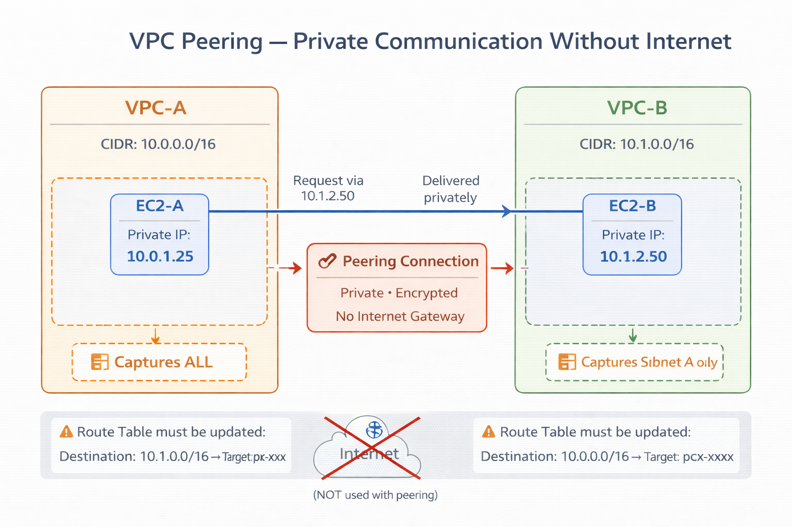
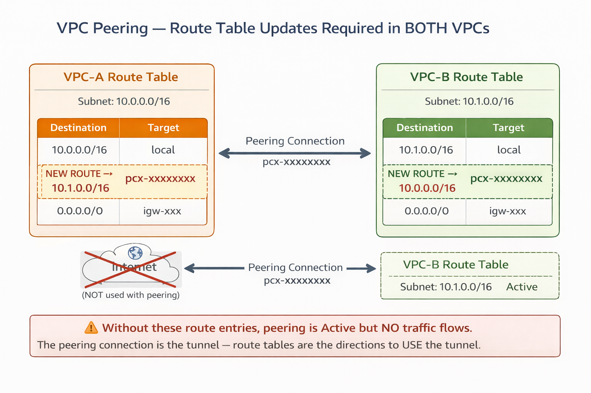
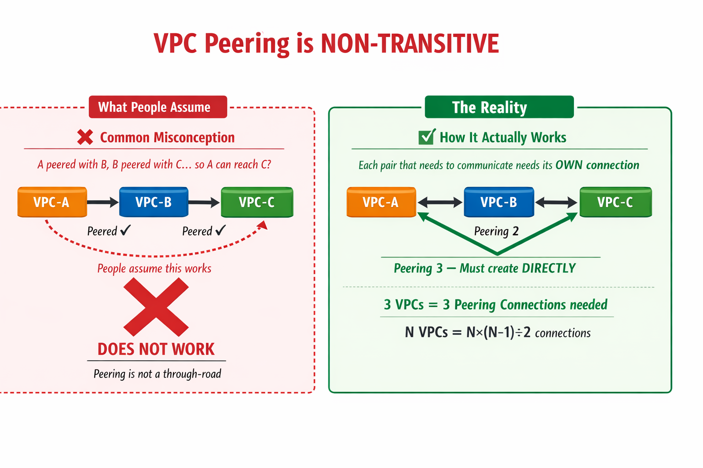

What is VPC Peering?
Picture two neighboring houses on the same street. Normally, if you want to visit your neighbor, you walk out your front gate, down the public road, and through their front gate. The entire neighborhood can see you walking. That's how VPCs communicate by default — through the public internet.
Now imagine you and your neighbor build a private gate between your two backyards — a direct connection that only you two can use. No one else sees you moving between the houses. That's VPC Peering.
VPC Peering is a private networking connection between two VPCs that allows them to communicate using private IP addresses, without routing traffic through the public internet.

Figure 6: VPC Peering creates a private network path between two VPCs — no internet required
Why Use VPC Peering?
- Security: Traffic never leaves the AWS network — no exposure to the public internet
- Low latency: Direct private connection is faster than routing through internet gateways
- Cost: No data transfer charges for traffic within the same Availability Zone via peering
- Isolation: You can connect specific VPCs without merging them — they remain separate environments
Same Account vs Different Account, Same Region vs Different Region
VPC Peering is flexible: you can peer VPCs within the same AWS account, across different AWS accounts, within the same Region, or across different Regions (inter-region peering). This makes it useful for multi-account architectures and disaster recovery setups.
💡 Inter-Region Peering: Traffic between VPCs in different regions is encrypted. This is a common exam point — VPC peering across regions provides encrypted private connectivity between your AWS infrastructure in different parts of the world.
Critical Rules for VPC Peering
There are three rules you MUST know for the exam:
Rule 1: No Overlapping CIDR Blocks
The CIDR blocks of the two VPCs being peered must not overlap. If they do, peering will fail.
Think about it this way: if both VPCs have the address range 10.0.0.0/16, AWS can't know which VPC a packet destined for 10.0.1.5 should go to. Ambiguous addresses = no connection possible.
❌ Will Fail: VPC-A = 10.0.0.0/16, VPC-B = 10.0.0.0/16 — overlapping, peering rejected
✅ Will Work: VPC-A = 10.0.0.0/16, VPC-B = 10.1.0.0/16 — different network portions, peering allowed
Rule 2: Route Tables Must Be Updated Manually
Creating a peering connection alone is not enough — you must manually update the route tables in both VPCs to direct traffic toward the peering connection.
Here's what this means: after you create the peering connection, each VPC's subnet route table needs a new entry saying "if traffic is destined for the other VPC's CIDR range, send it through the peering connection." Without this, the two VPCs have a tunnel but no GPS directions to use it.

Figure 7: Both route tables must have entries pointing to the peering connection for traffic to flow
Rule 3: Security Groups and NACLs Still Apply
VPC Peering does not bypass Security Groups or NACLs — all existing security rules still apply to peered traffic.
This means even after peering, if EC2-B's Security Group doesn't allow inbound traffic on port 22 from EC2-A's IP, the SSH connection will still be rejected. Peering changes the route, not the permissions.
The Request-Accept Workflow
Setting up a peering connection follows a two-step handshake process, similar to sending a friend request on social media:
- Requester: The owner of VPC-A sends a peering request to VPC-B, specifying the VPC ID of the target
- Acceptor: The owner of VPC-B logs into the VPC dashboard and accepts the peering request
- Once accepted, the peering connection status changes to Active
- Both owners then update their respective route tables
If the VPCs are in different AWS accounts, the acceptor must log into the second account to accept. If they're in different regions, the acceptor must switch to the correct region in their console.
VPC Peering is NOT Transitive
This is one of the most commonly tested VPC peering concepts.
VPC Peering is non-transitive: if VPC-A is peered with VPC-B, and VPC-B is peered with VPC-C, VPC-A cannot communicate with VPC-C through VPC-B.
Think of it like roads: if Road A connects Town A to Town B, and Road B connects Town B to Town C, you cannot drive from Town A to Town C using just these roads — there's no through-passage. You'd need a direct Road C connecting Town A and Town C.

Figure 8: Peering is non-transitive — A→B and B→C does NOT give A→C. Direct peering required for every pair.
❌ Common Exam Trap: If the question says "VPC-A is peered with VPC-B, and VPC-B is peered with VPC-C — can VPC-A reach VPC-C?" The answer is NO — not without a direct peering connection between A and C.
When VPC Peering Falls Short: Transit Gateway
Peering works great for a few VPCs, but if you have 10 or 20 VPCs that all need to talk to each other, you'd need to create peering connections between every pair (this is called a mesh topology) — which becomes complex quickly.
For connecting many VPCs at scale, AWS recommends Transit Gateway instead of VPC Peering — it acts as a central hub that all VPCs connect to, supporting transitive routing. Transit Gateway is a more advanced topic covered in a future session.
✅ Exam Rule of Thumb: For connecting 2–3 VPCs → use VPC Peering. For connecting 4+ VPCs → consider Transit Gateway.